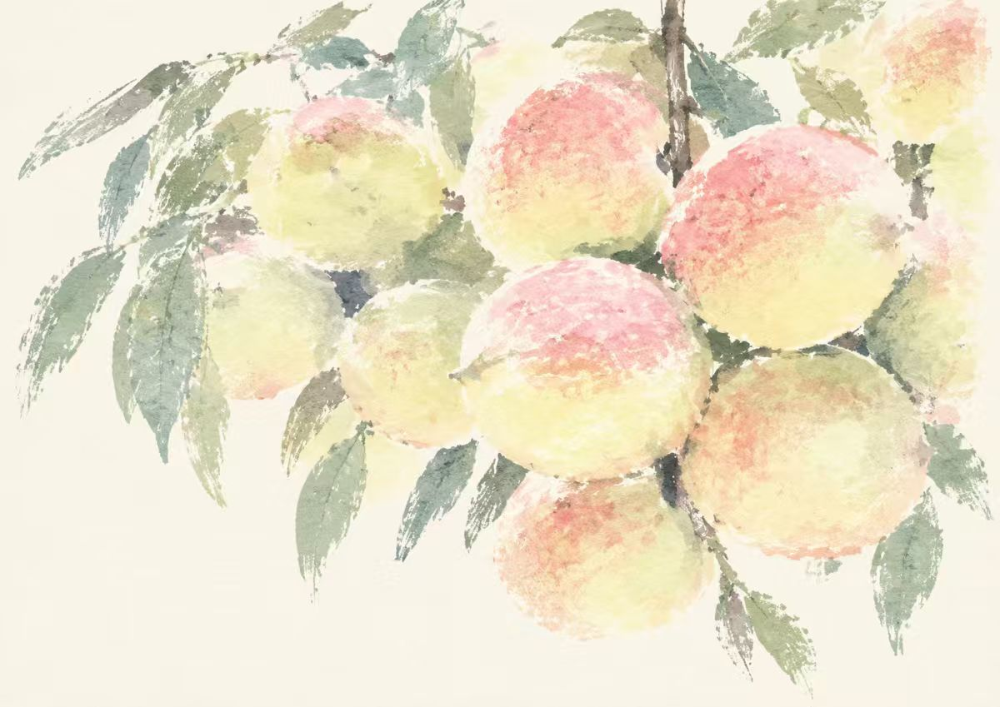

A TASTE OF LIANPING
广东 · 河源 · 连平
尝一口连平
一颗桃、一层米皮。
从食物出发，慢慢认识这片地方。
01 · 鹰嘴蜜桃
先认识这颗桃


02 · 九重皮
一层一层，叠出风味
七道工序，翻一页看一道。
蒸熟一层，
再添一层米浆。
九重皮是连平特色传统小吃。 米浆逐层蒸熟，反复叠加， 最后一层可撒上虾米、葱花等配料。

九重皮蒸制场景，摄于连平街头摊位。
七道工序，一页一页看
点卡片右侧翻到下一道工序，点左侧翻回上一道； 也可以按住左右滑动。